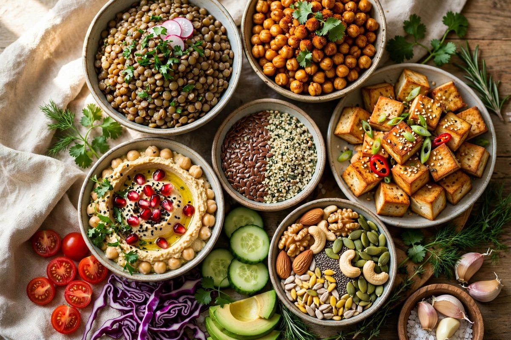

Home » Guides
Vegan Protein Sources

One of the most common questions about vegan eating is where the protein comes from. The answer is that plants are full of it: lentils, beans, tofu, tempeh, quinoa, nuts, and seeds all provide substantial protein. This guide explains the best sources, how much protein they contain, and how to make sure you get enough every day.
Legumes: the protein workhorses
Lentils, chickpeas, black beans, and kidney beans are the cheapest and most reliable vegan proteins. Cooked lentils provide about 18 grams of protein per cup, chickpeas about 15 grams, and black beans about 15 grams. They also bring fibre, iron, and folate, which makes them nutritional powerhouses. Dried legumes are cheapest; tinned ones are fastest. Rinse tinned beans well to reduce salt, and add them to soups, salads, curries, and wraps. Eating legumes most days is the single easiest way to meet your protein needs on a vegan diet.
Soy foods: tofu, tempeh, and edamame
Soy foods are complete proteins, meaning they contain all nine essential amino acids in good amounts. Firm tofu has about 20 grams of protein per cup and takes on the flavour of whatever you cook it with. Tempeh, made from fermented soybeans, has about 19 grams per 100 grams and a firm, nutty texture that works well sliced and fried. Edamame, young soybeans in the pod, make a great snack with about 17 grams per cup. Soy milk is also useful, with around 8 grams per cup, far more than most other plant milks.
Grains, nuts, and seeds
Quinoa is a complete protein with about 8 grams per cooked cup, and it cooks in fifteen minutes. Oats give about 5 grams per half cup dry, and wholewheat bread about 4 grams per slice. Nuts and seeds add protein in smaller amounts but also bring healthy fats: pumpkin seeds have about 9 grams per 30 grams, peanuts about 7 grams, and almonds about 6 grams. Peanut butter gives about 8 grams per two tablespoons. These foods add up across the day, so a varied diet usually covers protein without much effort.
Putting it together across the day
You do not need to combine specific proteins at each meal; your body pools amino acids across the day. What matters is variety and total intake. A day with oats and soy milk for breakfast, lentil soup for lunch, and tofu stir-fry with quinoa for dinner easily reaches 60 to 80 grams of protein. Use the protein calculator on our home page to find your personal target, and track your food for a week if you are unsure. Most people who eat a varied vegan diet with enough calories meet their protein needs comfortably.
A high-protein vegan day
Here is what a high-protein vegan day looks like. Breakfast is oats made with soy milk, peanut butter, and pumpkin seeds, giving about 20 grams of protein. Lunch is lentil soup with wholegrain bread, giving about 25 grams. A snack of edamame and a handful of almonds adds about 15 grams. Dinner is a tofu stir-fry with quinoa and vegetables, giving about 30 grams. The total is around 90 grams, which is plenty for most adults, and the food is varied, cheap, and satisfying. If you train hard, add a protein shake or an extra serving of tofu, and you can reach 110 grams without much effort. The key is to include a protein source at every meal, rather than trying to get it all at dinner.
Frequently Asked Questions
Do I need to combine proteins at every meal?
No. Eating a variety of plant proteins across the day gives your body all the amino acids it needs. The old idea that you must combine foods at each meal is outdated.
How much protein do vegans need?
Most adults need 0.8 to 1.2 grams per kilogram of body weight per day, and active people or athletes may need up to 1.6 grams. Use our calculator to find your number.
Is soy safe to eat every day?
Yes, for most people. Soy foods like tofu and tempeh have been eaten for centuries, and moderate daily amounts are considered safe and healthy.